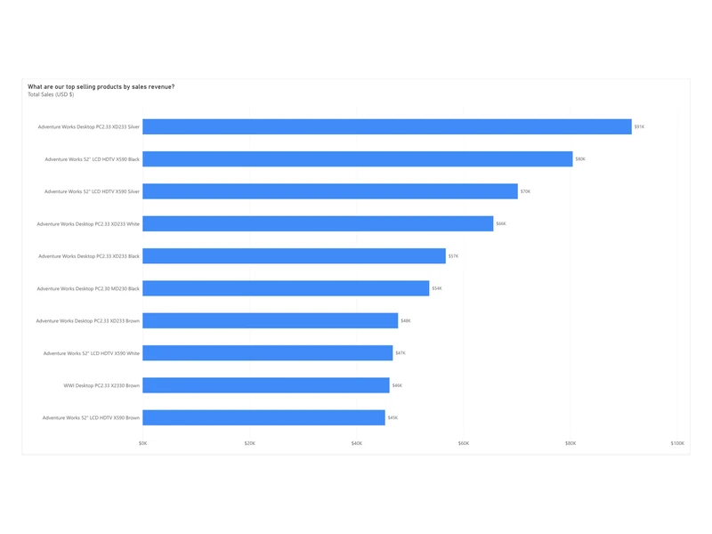
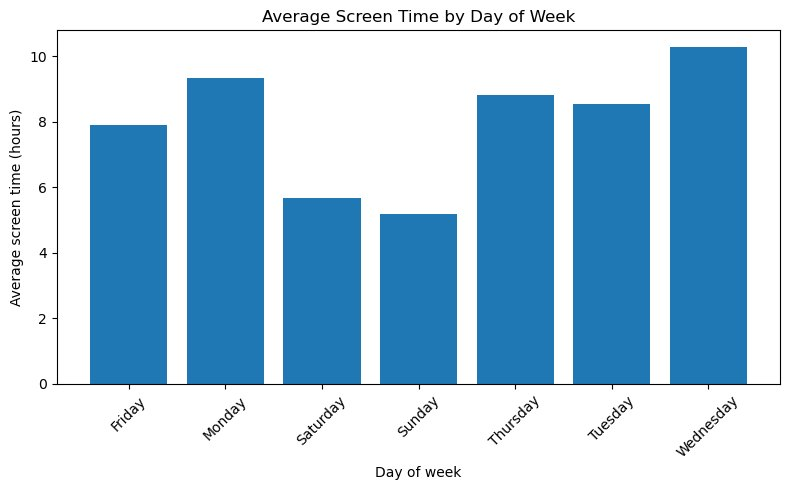
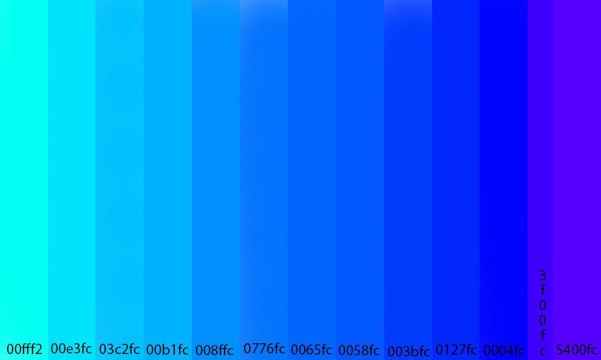
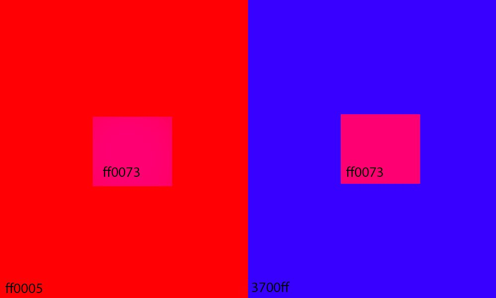
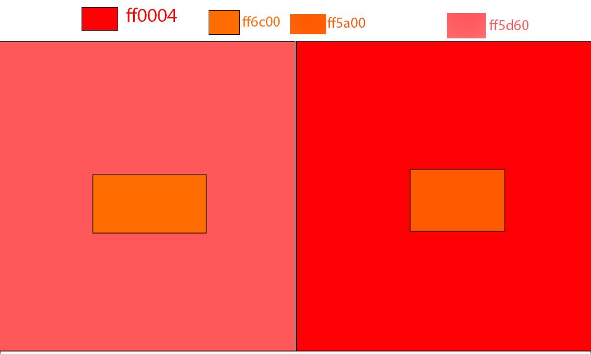

Owen McMahon
Information ScienceData AnalysisUX Research
Making information clearer at the intersection of data, design and how people use technology.
I'm an information science student at CU Boulder and a student assistant at CIRES. I map public data, study how people use technology, and turn research into findings people can act on.
Data and design, in service of people
I study Information Science at the University of Colorado Boulder, with a minor in Creative Technology and Design.
Most of my work starts with a question about people: how they use their phones, how they find information, how health and safety differ from one neighborhood to the next. I answer those questions with surveys, interviews, Python and GIS, then present what I find so it's easy to understand.
I also work as a student assistant at CIRES, CU Boulder's environmental sciences research institute, where I help keep information organized and flowing.
- Data analysis and statistics
- GIS and spatial analysis
- UX research · surveys, interviews, usability testing
- Data visualization
- Information organization
- Python · pandas, Altair, Matplotlib
- SQL
- Power BI and Tableau
- QGIS
- Excel · statistical analysis, pivot tables
- Photoshop
My approach
Start with a question about people.
Every project begins with how people actually live and work, like how students use AI in class or how health differs between neighborhoods. The data comes second.
See it in the AI usage survey →Choose the measure that tells the truth.
Raw numbers can hide the story. In Denver, the pattern only appeared once crime was normalized by area and split into categories.
See it in the Denver project →Use more than one method.
A survey shows what people want, and interviews explain why. Combining methods gives findings both breadth and depth.
See it in the screen-time app →Make findings easy to read.
Research only helps if people can use it. I design charts and pages so the main point lands in a few seconds.
See it in the chart redesign →Projects
More violent, not more crime
Crime and health equity in Denver
I processed five years of crime reports in QGIS and built our team’s Tableau dashboard comparing them with Denver’s Health Equity Index.
Read the case study →150 articles, one new home
Migrating CIRES content into Helpjuice
Migrating content and data for CU Boulder's environmental sciences institute, and keeping its daily information flowing.
Read the case study →
Ten pages, nine business questions
A Power BI sales report for Contoso
I modeled four years of retail sales as a star schema and built a Power BI report that answers nine questions a sales team would ask.
See the report →Nudge, don't lock
Designing a screen-time app people will keep using
User research and concept development for an app that helps students set and keep screen-time goals.
Read the case study →AI in the classroom, by the numbers
How CU students use AI
A team survey of 100+ students. I helped design and distribute it, and analyzed the results in Python.
Read the case study →Redesigning the Kaiser Permanente member health portal
A UX class project grounded in user interviews, think-aloud usability tasks and a System Usability Scale survey. The full case study will go up when the redesign is finished.
Smaller projects and studies

Does screen time affect my mood?
Two weeks of my own data, merged with a weather API.
Counting dollars, not disasters
Redesigning NOAA's billion-dollar disaster chart
Turning a cluttered count chart into a clear story about cost.

Color studies
Exercises in how surrounding colors change the way a color looks.


B.S. Information Science
- Coursework: Information Ecosystems, Designing Interactions, Quantitative Reasoning for Information Science, Visual Literacy and Design, Programming for Information Science
Student Assistant, CIRES
- Migrated 150+ articles into Helpjuice: converted formats, cleaned metadata, selected and sized images, and checked links and formatting
- Tracked migration status in a spreadsheet and kept stakeholders up to date
- Manage front-desk operations and communication systems serving 100+ people daily
- Organize and process internal data and documentation
- Support administrative systems that distribute information across departments
Survey research: student AI usage
- Designed and distributed a survey to 100+ students on AI use in academics
- Analyzed results in Python with proportions and hypothesis testing
- Compared CU students with national AI-usage trends
Crime and health equity in Denver
- Spatially joined 318,590 Denver crime reports (2021–2025) to 77 neighborhoods in QGIS and normalized them by area
- Built the team’s Tableau dashboard comparing crime with the city’s Health Equity Index
Technical: Python (pandas, Altair, Matplotlib), SQL, Excel (statistical analysis, pivot tables), Power BI, Tableau, QGIS, data visualization, survey design, UX prototyping, Photoshop
Professional: Data analysis, research methods, problem solving, communication, time management
Let's work together.
Whether it's a role, a project or a question about my work, I'd love to hear from you. Looking forward to it.
Let's connectOpens an email to owenthefuture@icloud.com ·
- Based in
- San Francisco, CA and Boulder, CO
- Time zones
- Pacific and Mountain
- Interested in
- Data, UX, GIS